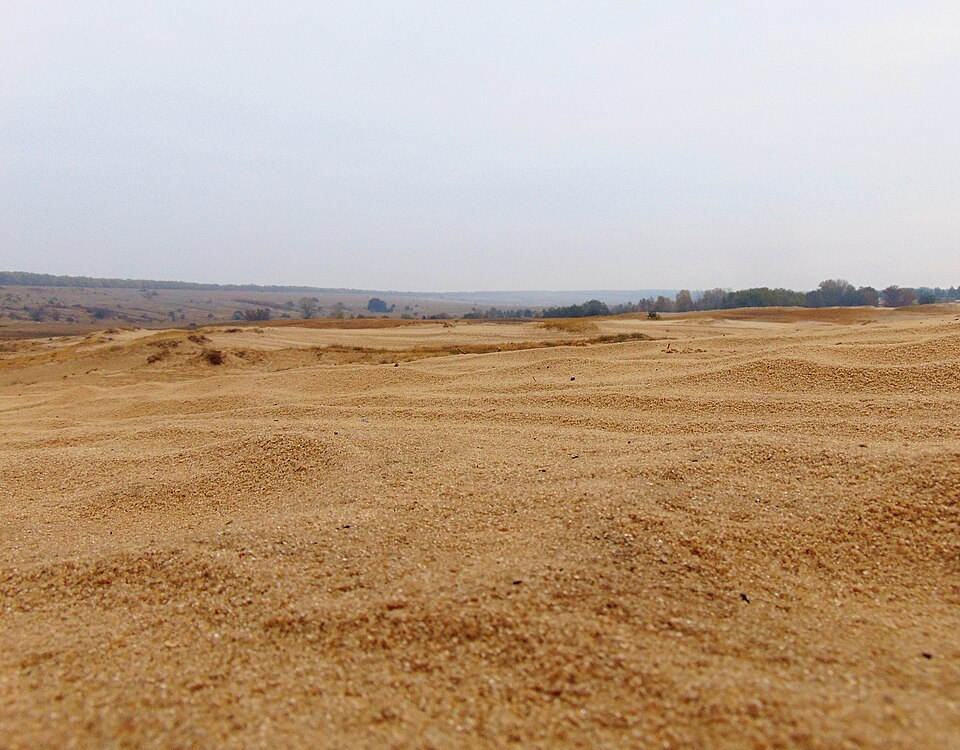
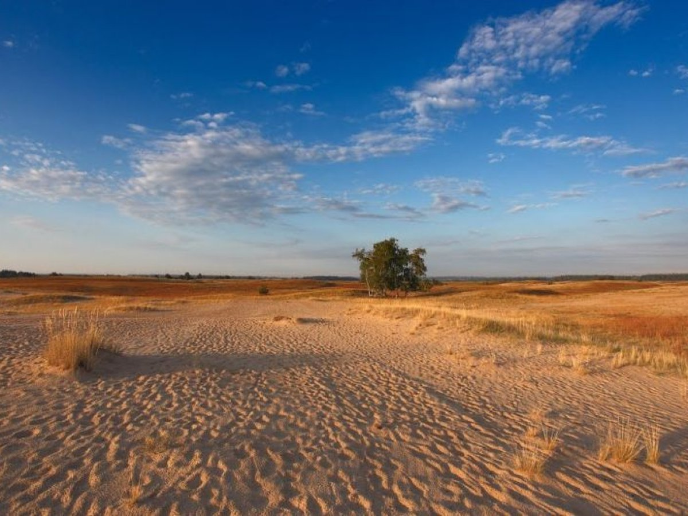
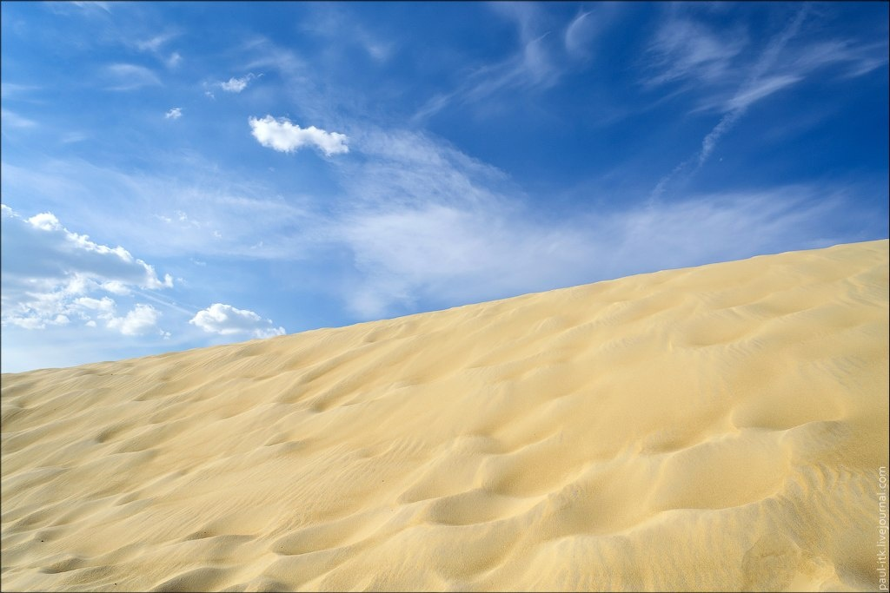
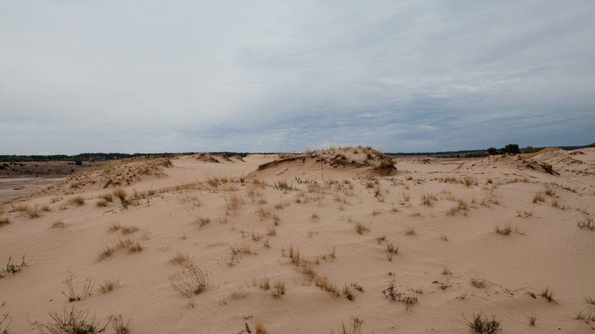

Кицівська пустеля

Основна інформація та історія
Ки́цівська пусте́ля — піщана горбиста місцевість в Україні, в долині річки Сіверський Донець. Розташована в межах Чугуївського району Харківської області, на південь від села Кицівка.
Довжина Кицівської пустелі бл. 5 км, ширина — 2,3 км. Перепад висот — приблизно 50 м. Степова та напівпустельна місцевість є домівкою для рідкісних видів комах. Площа бл. 11,5 км кв.
Напівпустельні ландшафти утворені алювіальними піщаними відкладеннями річки Сіверський Донець, що нагадують дюни. У минулому на цьому місці був танковий полігон, що використовувався в 1960-1990-ті роки. З тих часів залишилися танкові снаряди, що не вибухнули. Піщані пагорби частково поросли мохами, лишайниками, чагарниками і травою.
Географічне розташування
Чугуївський район
Фотогалерея


